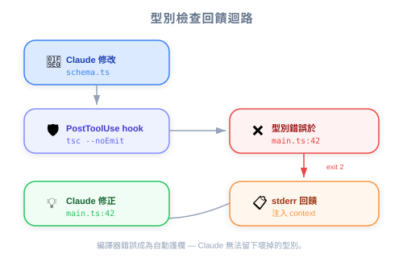
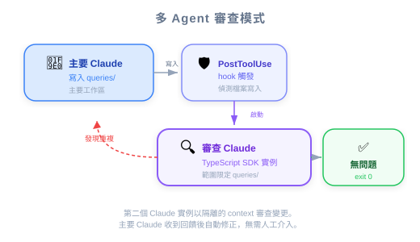

| 项目 | 内容 |
|---|---|
| 考试对应 | D3 — Claude Code Configuration & Workflows（占 20%）、D1 — Agentic Architecture（占 27%） |
| Task Statements | 1.5（Agent SDK hooks：tool call interception & data normalization）、3.2（custom commands & hooks）、1.2（multi-agent coordinator-subagent patterns） |
| 课程来源 | claude-code-in-action / 05-hooks / Lesson 18 |
PostToolUse hook 可以在每次编辑后跑 compiler/linter 检查（type-checking hook），也可以启动另一个 Claude Code instance 来 review 改动是否有重复代码（query deduplication hook）——两者都建立了不需人工介入的 self-correcting feedback loop。
当 Claude 修改一个 function signature 时，它会更新定义文件但常常漏掉其他文件的 call site。就像 iOS 开发者改了一个 protocol method 的 signature，如果没有 compiler 帮你检查所有 conformance，坏掉的 call site 就会溜走。
在 TypeScript 项目里：
1. schema.ts 定义了 createSchema()
2. main.ts 调用 createSchema()
3. 你请 Claude 在 createSchema() 加一个 verbose: boolean 参数
4. Claude 更新了 schema.ts 但没有更新 main.ts
5. 结果：call site 出现 type error，但 Claude 完全没发现
🎬 视频补充
讲师现场演示了这个场景——Claude 成功编辑了 function 定义，但留下了坏掉的
main.ts。关键洞察：Claude 不会自动跑 TypeScript compiler，所以它不知道项目其他地方出了问题。

一个 PostToolUse hook，在每次文件编辑后跑 tsc --noEmit：
"PostToolUse": [
{
"matcher": "Write|Edit|MultiEdit",
"hooks": [
{
"type": "command",
"command": "node hooks/tsc.js"
}
]
}
]
Hook 脚本：
1. 执行 tsc --noEmit（只做 type check，不生成输出文件）
2. 捕获所有 compiler errors
3. 如果有错误，以 exit code 2 结束并输出错误信息
4. Claude 收到错误反馈，在下一轮自动修正
💡 工程类比
这跟 Xcode 的 build system 一模一样——你编辑了一个
.swift文件，compiler 就会 incrementally check 所有依赖的文件。这个 hook 替 Claude Code 复制了这个 compiler feedback loop。
| 语言 | Hook 命令 | 检查内容 |
|---|---|---|
| TypeScript | tsc --noEmit |
整个项目的 type errors |
| Python | mypy . 或 pyright |
Type annotation 违规 |
| Rust | cargo check |
Borrow checker + type errors |
| Go | go vet ./... |
Static analysis 问题 |
| 无类型 JS/Python | npm test 或 pytest |
用测试当作 type checking 的替代 |
⚠️ 性能考量
TypeScript hook 算轻量——在中型项目上
tsc --noEmit大概 2-5 秒。大型项目可以考虑只检查有改动的文件。
当 Claude 收到复杂的多步骤任务（例如「建一个 Slack 集成，通知 pending 超过时间的订单」），它可能会失焦而写出重复的功能，而不是重用既有代码。
src/queries/orderQueries.ts 已经有 getPendingOrders()getPendingOrders() — 正确/clear 之后）：Claude 写了一个全新的 getOrdersPendingTooLong() — 重复代码🎬 视频补充
讲师展示了当任务简单聚焦（「打印 pending 订单」），Claude 会重用既有的 query。但当同样的需求被包在更大的任务里（Slack 集成），Claude 就建了新的 duplicate。Context window 和任务复杂度直接影响 Claude 发现既有代码的能力。

这个 hook 使用 multi-agent review pattern — 一个 Claude instance 审查另一个的工作：
Claude（主要）写入 queries/ 目录
↓
PostToolUse hook 触发
↓
Hook 启动第二个 Claude Code instance（通过 TypeScript SDK）
↓
第二个 instance 对比既有 queries 审查改动
↓
发现重复：exit code 2 + 反馈 → 主要 Claude 移除 duplicate
没有重复：exit code 0 → 主要 Claude 继续
"PostToolUse": [
{
"matcher": "Write|Edit|MultiEdit",
"hooks": [
{
"type": "command",
"command": "node hooks/query-hook.js"
}
]
}
]
Hook 脚本逻辑：
1. 检查改动的文件是否在 ./queries 目录下（不在就 early exit）
2. 构建一段 prompt，请 Claude review 改动是否有 duplicate
3. 通过 TypeScript SDK（@anthropic-ai/claude-code 包）启动独立的 Claude Code instance
4. 解析响应——如果找到 duplicate，exit code 2 并附带反馈信息
5. 主要 Claude 收到反馈后重构，改用既有的 query
💡 这是 hook 里面的 multi-agent pattern
Query hook 本质上是 coordinator-subagent pattern（Task Statement 1.2）嵌入 hook 系统（Task Statement 1.5）里。「reviewer」subagent 的 context 是 scoped 的——它只看 queries 目录，不是整个项目。这符合考试的核心哲学：Scoped context > Full history。
| 好处 | 代价 |
|---|---|
| 更干净的 codebase，更少重复 | 每次编辑增加 ~10-30 秒 |
| query 组织更一致 | 额外的 API 使用量（第二个 Claude instance） |
| 抓住 Claude 会遗漏的 duplicate | 只适用于关键目录 |
⚠️ 最佳做法：限制监控范围
讲师明确建议只监控「少数几个目录，像是项目里真正重要的文件夹，尽量减少额外的工作量。」
| ❌ 错误做法 | ✅ 正确做法 | 为什么 |
|---|---|---|
| 在 system prompt 加「永远跑 type checker」 | PostToolUse hook 跑 tsc --noEmit |
Prompt 是 probabilistic；hook 是 deterministic |
| 叫 Claude「写之前先检查有没有重复」 | PostToolUse hook 搭配独立 reviewer instance | 复杂任务中 Claude 会失焦——视频已演示 |
| 用 duplication hook 监控所有目录 | 只 scope 到关键目录 | 非关键目录的性能代价大于收益 |
| 用 PreToolUse 阻止 duplicate 写入 | 用 PostToolUse review 并提供反馈 | 要先看到写了什么才能判断是否 duplicate |
| 依赖 Claude 自己找到既有代码 | 自动化 review 作为安全网 | Claude 发现既有代码的能力会随任务复杂度下降 |
🎯 这些概念会出现在哪些考试场景
- S2（Code Generation）：TypeScript type-checking hook = 确保生成的代码质量
- S4（Developer Productivity）：两个 hook 都通过自动抓问题改善开发流程
- S5（CI/CD）：CI pipeline 中的 hook 作为自动化质量关卡
常见题型：「Claude 修改了 function 但破坏了其他地方的 call site。最佳做法是什么？」
答案方向：PostToolUse hook 跑 compiler/type checker — Architecture > Prompt。
你的团队用 Claude Code 开发一个 200+ 文件的 TypeScript 项目。工程师反馈 Claude 修改 function signature 时，经常破坏其他文件的 call site。最有效的解决方案是什么？
tsc --noEmit 并把 type errors 反馈给 Claude--resume flag 让 Claude 保留它看过的所有文件的 context在一个有很多 SQL query 文件的大型项目中，Claude 有时候会创建 duplicate queries，而不是重用既有的。这在 query 相关任务被包在更大的多步骤任务里时最常发生。最佳做法是什么？
/clear 避免 context 干扰你在设计一个 PostToolUse hook，会启动另一个 Claude Code instance 来 review 改动。对于 reviewer instance，最重要的考量是什么？